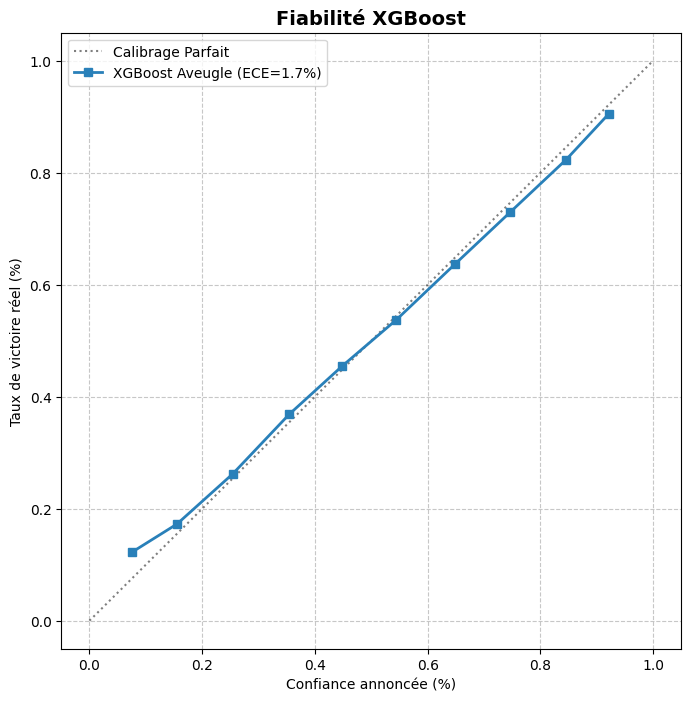
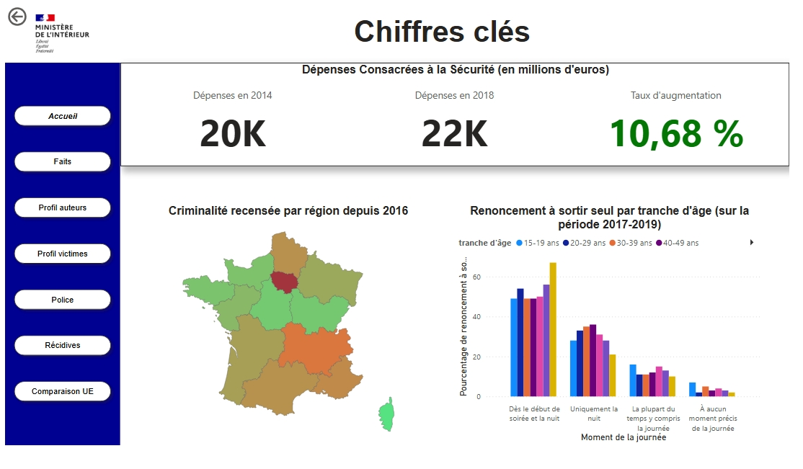

Ingénieur Data spécialisé en Sports Analytics.
Élève-ingénieur en fin de cursus (Polytech Clermont, spécialité IA & Big Data). Je construis des pipelines de données et des modèles prédictifs avec une exigence de rigueur méthodologique — protocoles anti-fuite stricts, validation adaptée à la structure des données, résultats honnêtes plutôt qu'optimisés pour impressionner. Expérience en production (LFP Media) et en recherche appliquée (Université de Malmö, publication dans Frontiers in Digital Health).
Profil
Le parcours et les convictions derrière les projets ci-dessous.
Je termine mon cursus d'ingénieur à Polytech Clermont (spécialité Informatique, Modélisation et Data Science — orientation IA & Big Data), diplômé en juillet 2026. Mon parcours s'est construit autour d'une idée simple : une donnée n'a de valeur que si l'on sait la rendre utilisable — par un décideur, un journaliste, un recruteur sportif ou un clinicien. C'est ce qui m'a mené de la recherche appliquée en santé (Université de Malmö, publication scientifique à la clé) au football professionnel.
Mon poste d'Assistant Chef de Projet Football Data à la LFP Media (Ligue de Football Professionnel) a confirmé sans ambiguïté mon envie d'être ingénieur data dans le sport. J'y ai bénéficié d'une grande liberté de création et de proposition, sur des missions volontairement variées :
- Un projet data full-stack : conception d'une application Streamlit interne qui automatise l'accès aux données, met en avant l'information réellement importante et fournit des visualisations propres sur lesquelles la rédaction peut s'appuyer.
- De la R&D sur des projets d'innovation : construction du modèle, tests, puis présentation des résultats en interne.
- Les premiers audits qualité de fournisseurs de données (Event & Tracking), pour comparer objectivement une offre concurrente à ce qui est déjà en place.
- De l'éditorial : transformer des données parlantes en facts exploitables, et produire des rapports d'analyse — données éditoriales directement associées à des clips vidéo montés par mes soins — à destination des journalistes, pour des plateaux d'avant-match, des émissions, des interviews, de la rédaction et du documentaire.
C'est cette double casquette qui m'intéresse : être assez rigoureux techniquement pour que le chiffre soit juste, et assez proche du métier pour qu'il serve à quelque chose.
Le sport est d'abord une passion. Je suis assidûment le football, le basket et le tennis, et je ne rate pas les grands rendez-vous — Coupes du monde, Jeux Olympiques, championnats internationaux, quel que soit le sport. J'ai pratiqué en loisir le golf, le tennis de table, le basket, le badminton, le judo, le ski et la natation ; aujourd'hui, c'est surtout le tennis et le football.
Cette passion nourrit directement ma pratique technique : je passe beaucoup de temps à décortiquer les confrontations à venir pour identifier les indicateurs d'avant-match les plus déterminants sur ce qui va réellement se produire — une démarche d'aide au pronostic qui est exactement la question posée par mon projet phare sur l'efficience du marché des paris. Et, plus anecdotiquement, je collectionne les cartes de sport.
Projets techniques
Trois études de cas complètes — de la donnée brute au résultat, avec le raisonnement méthodologique à chaque étape.
⚽ Prédiction de résultats & efficience du marché des paris
Projet phare · Projet 5A · binôme (Polytech Clermont) · repo public
Les données sportives publiques (Elo, forme, statistiques) suffisent-elles à prédire un match aussi bien que les cotes des bookmakers — sans utiliser ces cotes ? Une chaîne de modélisation complète sur 52 580 matchs des 5 grands championnats européens (2006–2025) pour répondre à cette question sous l'angle de l'efficience de marché.
Deux sources hétérogènes sans identifiant commun : les résultats et cotes de Football-Data.co.uk (228 377 matchs) et les classements Elo de ClubElo.com (242 591 snapshots). Les noms de clubs divergent (« Man Utd » vs « Manchester United ») : une jointure stricte aurait rejeté plus de 40 % des lignes, en excluant surtout les outsiders — un biais de sélection majeur. J'ai mis en place un pipeline de fuzzy matching (distance de Levenshtein, seuil de similarité à 85 %, complété par un dictionnaire de correspondances corrigé à la main), portant la complétude des indicateurs Elo de < 60 % à 90,6 %, et à 100 % sur le périmètre final.
Un audit de complétude (data profiling) a ensuite guidé un entonnoir de sélection : plutôt que de garder le volume maximal (165 619 matchs, 82 % de complétude, trop bruités), j'ai retenu le sous-ensemble Big 5 / 2006–2025 (52 580 matchs, 97,3 % de complétude) — un choix assumé de la qualité du signal sur la quantité, la coupure 2006 étant justifiée par un point d'inflexion dans la disponibilité des statistiques de jeu.
- Une trentaine de variables organisées en trois axes : force intrinsèque (EloDiff — la variable maîtresse, corrélée à 0,889 à la probabilité implicite du marché), forme récente et qualité de jeu (tirs, corners, différentiel de cartons).
- Fenêtres glissantes de profondeur k = 5, décalées d'un match (
shift(1)) pour garantir la causalité, et indicateurs domicile / extérieur disjoints pour capter les profils asymétriques. - Trois garde-fous anti-fuite indépendants : jointure Elo par
merge_asof(direction='backward')(aucun snapshot postérieur au match), lag-1 sur toutes les fenêtres, et validation croisée temporelle (TimeSeriesSplit, 5 folds expansifs) — jamais de shuffle aléatoire.
Trois familles comparées : Régression Logistique (baseline linéaire), Random Forest et XGBoost, chacune déclinée en version « avec cotes » (test de contrôle) et « aveugle » (sans cotes). Chaque modèle est jugé sur trois dimensions : discrimination (accuracy), calibration probabiliste (Log Loss, Brier, ECE) et rentabilité économique (ROI d'une stratégie de value-betting).


Détails d'implémentation & MLOps
Hyperparamètres XGBoost (approche conservatrice, anti-surapprentissage sur données bruitées) :
max_depth = 4, subsample = 0.8, learning_rate = 0.05, 300 arbres.
Classe minoritaire « match nul » (≈ 26 %, faible ratio signal/bruit) : après échec du
rééquilibrage balanced (chute de l'accuracy sous 49 %), choix d'une pénalisation asymétrique douce
(wD = 1,1). Le XGBoost capte un rappel de 6 % sur les nuls, contre ≈ 1 % pour la RF.
Refonte MLOps du dépôt (menée par mes soins après le projet académique) : package Python installable (src layout, PEP 517), pipeline CLI end-to-end, 49 tests unitaires, CI GitHub Actions (pytest sur Python 3.11 & 3.12, ruff, mypy).
🎯 Profilage de joueurs par style de jeu — Clermont Foot 63
Projet 4A · binôme · partenariat Clermont Foot 63 · données StatsBomb
Traduire des statistiques brutes StatsBomb (Ligue 1, 2023-24) en styles de jeu interprétables pour les recruteurs, via un pipeline JSON → SQLite → clustering non supervisé → dashboard Streamlit.
Profils identifiés & dashboard
Pivot — dégagements, longs ballons sous pression, duels aériens gagnés élevés ; faible en dribble et pressing. Construction — fortes valeurs xGChain / xGBuildup, moteur de la progression du ballon. Mauvais finisseur — présence dans le jeu mais xG et finition faibles.
Dashboard Streamlit pour les recruteurs : fiche joueur avec centiles par variable
discriminante, comparaison de deux joueurs par radar chart, nuage de points à quadrants (médianes),
recherche filtrée par club. Visualisations Plotly / Seaborn, normalisation StandardScaler.
Repo privé (données StatsBomb sous licence) — code non publié, approche détaillée ici.
🧠 Actimétrie & maladie de Parkinson — prédiction des scores MDS-UPDRS
Stage de recherche · Université de Malmö (Suède) · mars – juil. 2025
Peut-on estimer l'état clinique d'un patient parkinsonien à partir d'un capteur porté au poignet ? Prédire les scores cliniques MDS-UPDRS (habituellement évalués en consultation) à partir de l'activité mesurée en continu à domicile, sous un protocole de validation qui ne triche pas sur la généralisation patient.
GGIR et nParACT) sont combinés à des
embeddings auto-supervisés SimCLR (64 dimensions), un encodeur entraîné par patient sur ses
propres fenêtres de signal pour capturer des motifs temporels invisibles aux variables classiques. Sept modèles
(Ridge, Lasso, ElasticNet, BayesianRidge, DecisionTree, KNN, Dummy) sont croisés avec cinq cibles (UPDRS 1, 2, 3
et leurs combinaisons), chacun avec sa propre sélection de variables par seuil SHAP optimisé — puis évalués
en Leave-One-Patient-Out strict : chaque patient testé n'a jamais été vu à l'entraînement.
Résultats par cible & publication
Meilleurs résultats retenus : BayesianRidge sur Tot1 (symptômes non moteurs) — RMSE 3,07, r = 0,752 ; Lasso sur le score composite Tot2+Tot3 (autonomie + moteur) — RMSE 6,61, r = 0,888. Les modèles linéaires régularisés (Ridge, Lasso, BayesianRidge) surclassent systématiquement KNN et Decision Tree sur ce volume de données restreint.
Ces travaux ont donné lieu à une publication évaluée par les pairs, dont je suis co-auteur.
Données patients protégées (santé) — non partageables ; la publication évaluée par les pairs est en accès libre.
Autres projets du cursus
Des travaux de groupe menés pendant ma formation, sur des domaines volontairement variés — vision par ordinateur, apprentissage par renforcement, BI, bases de données.
Estimation de profondeur monoculaire — fine-tuning LoRA
Adaptation du modèle de fondation Depth Anything V2 à un jeu d'images industrielles (caméras Zivid, pneus stockés) par LoRA, pour corriger un fort domain gap. Cibler les couches denses plutôt que les seules couches d'attention a été déterminant pour retrouver l'échelle métrique : le RMSE passe de 1,81 m à 7 cm et la précision géométrique (δ < 1.25) de 17 % à 99,4 %, avec un F1 de 0,96 sur la détection d'obstacles proches.
Projet de groupe · vision par ordinateur
Apprentissage par renforcement — contrôle de trajectoire (cas Michelin)
Implémentation d'un agent DDPG (acteur-critique, experience replay, réseaux cibles, bruit d'exploration) pour piloter un véhicule sur circuit à la limite d'adhérence, en s'appuyant sur un modèle de rigidité de dérive du pneumatique. Volet complémentaire d'optimisation bayésienne pour le calibrage de ce modèle.
Projet de groupe · RL & optimisation
Sécurité en France vs Europe — tableau de bord Power BI

Sujet libre, en binôme : l'essentiel du travail a porté sur la recherche de sources fiables (principalement INSEE), leur nettoyage et leur mise en forme sous Power Query. Le rapport compte 7 pages thématiques (faits, profils auteurs/victimes, police, récidives, comparaison UE), rendues navigables par mesures DAX, segments et signets.
Binôme · repo public & captures des 7 pages →
Reconnaissance de signes — vision par ordinateur
Projet de détection et de reconnaissance de signes à partir d'images, autour d'un pipeline classique de vision par ordinateur : préparation du jeu d'images, entraînement d'un modèle de classification et évaluation des performances.
Binôme · vision par ordinateur
MusicShop — base de données & application Java
Conception d'un schéma relationnel SQL pour une boutique de musique (modélisation, contraintes d'intégrité, requêtes) et développement de l'application Java associée pour l'exploiter.
Binôme · bases de données & POO
Contact
Recherche un CDI dès octobre 2026 — Sport, Betting, Tech.